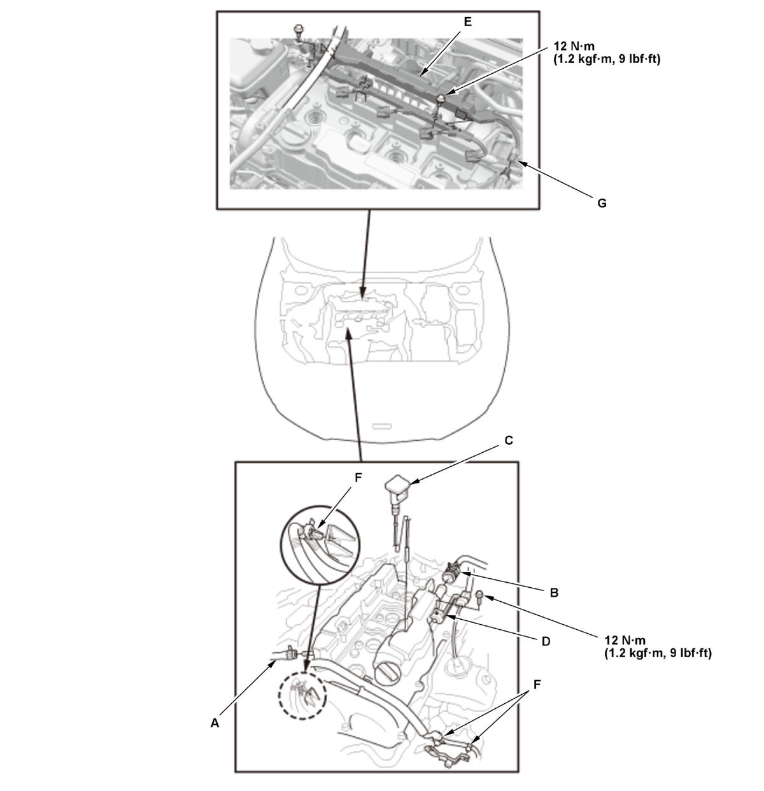

Cylinder Head Cover Removal and Installation (K20C2): Installation
- Cylinder Head Cover - Install
1. Thoroughly clean head cover gasket A, head cover gasket B, and the grooves of the cylinder head cover (C). NOTE: Check and, if necessary, replace head cover gasket A and head cover gasket B.
2. Check the spark plug seals (D) for damage. If any seals are damaged, replace the cylinder head cover.
3. Install head cover gasket A and head cover gasket B in the grooves of the cylinder head cover. Make sure head cover gasket A and head cover gasket B are seated securely.
4. Apply liquid gasket to the cam chain case, the No. 5 rocker shaft holder and the high pressure fuel pump base mating areas. 5. Set the spark plug seals (A) on the spark plug tubes. Place the cylinder head cover (B) on the cylinder head, then slide the cylinder head cover slightly back and forth to seat head cover gasket A and head cover gasket B.
6. Inspect the spark plug seals for damage.
7. Tighten the bolts in two steps. In the final step torque bolts, in sequence, to 7.0 N.m (0.71 kgf.m, 5.2 lbf.ft). - PCV Valve - Install
1. If the PCV valve is removed, install the PCV valve . - Cylinder Head Cover External Item - Install
1. Connect the PCV hose (A) and the breather hose (B).

Courtesy of HONDA, U.S.A., INC.2. Install the dipstick (C), the connector bracket (D), the harness holder (E), and the harness clamps (F).
3. Connect the connector (G).
- Ignition Coil - Install